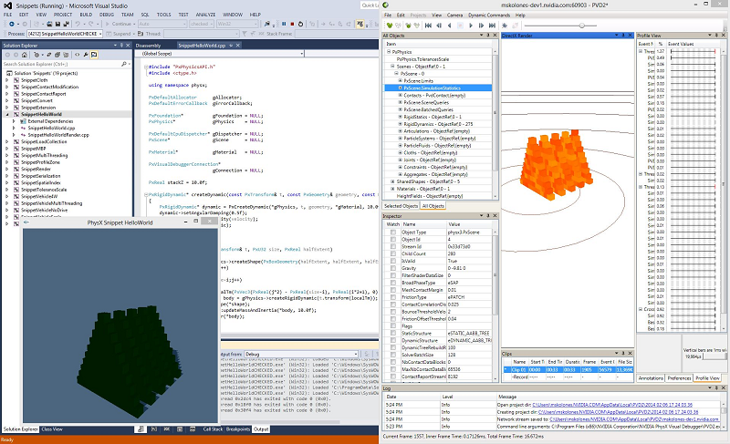

Snippets¶
What are PhysX Snippets?¶
In the context of the PhysX SDK, a 'Snippet' is a simple, minimalistic code sample. PhysX-SDK version 3.3.0 offers a collection of Snippets to illustrate usage of the PhysX API in a concise format, free from the complexity of a sample framework or game engine. The Snippets folder is in the top-level directory of the PhysX SDK, alongside directories for Documentation, Include, Samples, etc.
- The folder {SDK Root}/Snippets/compiler/{platform} contains the Snippets solution file, e.g.
- Snippets/compiler/vc14win64/Snippets.sln
Although a few of the Snippets support rendering, ( Win32, Win64, OSX and Linux only ) most Snippets do not provide rendering, require no input, and provide only limited output through messages. Although Snippets can be run from a command prompt or by double-clicking the executable icon, the best way to explore Snippets is by viewing the code in the Visual Studio IDE, and running the program in the debugger.
HelloWorld: PhysX Basics¶
SnippetHelloWorld illustrates basic use of PhysX, from startup to shutdown of a simple scene, and is a good place to start learning the PhysX API. The simplest Snippets comprise a single source file, but SnippetHelloWorld, among others, supports optional rendering through a second source file. SnippetHelloWorld creates a number of box stacks on a plane, and if rendering is enabled, allows the user to create new stacks and fire a ball from the camera position.
The primary code for SnippetHelloWorld is found in {SDK Root}/Snippets/SnippetHelloWorld/SnippetHelloWorld.cpp.
Using PhysX Visual Debugger with SnippetHelloWorld¶
As is the case with any Snippet built against PROFILE, CHECKED or DEBUG configurations of the PhysX runtime, HelloWorld will automatically connect to the PhysX Visual Debugger if that application is already running when the Snippet executable is launched. For Snippets without rendering, PVD provides an easy way to visualize the contents of the PhysX scene presented in the Snippet. In the screenshot image below, PhysX Visual Debugger appears on the right hand side, while Visual Studio and Snippet Hello World are on the left.
